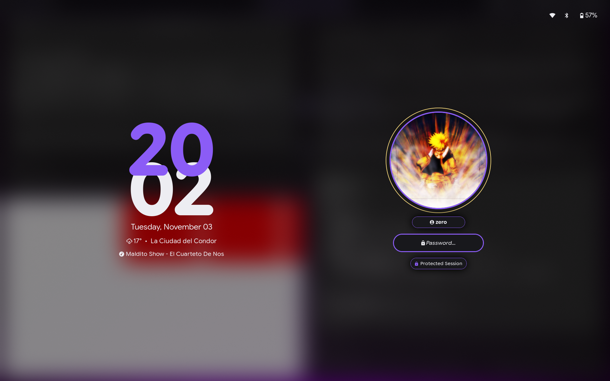

Screen Locking & Idle Management (Hyprlock & Hypridle)
Session security and power conservation are handled natively within the Hyprland ecosystem using Hyprlock (fast, graphical Wayland screen locker) and Hypridle (Wayland-native idle daemon).
Visual Showcase

File Locations & Symlinks
- Hyprlock configuration:
~/dotfiles/hypr/hyprlock.conf->~/.config/hypr/hyprlock.conf - Hypridle configuration:
~/dotfiles/hypr/hypridle.conf->~/.config/hypr/hypridle.conf - Dynamic color palette:
~/.config/themes/current/hyprlock.conf(generated by Matugen) - User profile avatar:
~/dotfiles/hypr/avatar.png->~/.config/hypr/avatar.png - Auxiliary status & widget scripts:
~/dotfiles/hypr/scripts/(weather,media,status,network,bluetooth,battery) - Keybindings definition:
~/dotfiles/hypr/binds.conf - Autostart registration:
~/dotfiles/hypr/autostart.conf
Hyprlock Architecture
Hyprlock generates a real-time frosted glass lock screen that adapts dynamically to the current wallpaper and active Material You color palette.
1. Dynamic Theming (Matugen Integration)
Color tokens are evaluated by Matugen and imported directly into hyprlock.conf:
Available color roles include:
* $accentColorPurple: Primary accent used for borders, active hour numbers, and validation states.
* $bgColorSecondary: Inner background container for the input field and pill chips.
* $textColor: High-contrast font color for minutes, date, and auxiliary labels.
* $textColorDanger: Error state indicator for incorrect password attempts.
* $accentColorAttention: Warning color indicating Caps Lock activation and outer avatar ring.
2. Dual-Panel Pixel Architecture
Hyprlock utilizes Google Sans Flex Rounded typography with Nerd Font fallback icons, arranged in an asymmetric dual-panel composition:
[ Top Right: System Status ( 57%) ]
LEFT PANEL RIGHT PANEL
(Clock & Telemetry) (Profile & Auth)
20 (Accent) [ Avatar ]
02 (Text) (Circular Halo)
Tuesday, November 03
17° • La Ciudad del Condor [ zero ]
Song - Artist Name [ ✱✱✱✱✱✱✱✱ ]
[ Protected Session ]
3. Smooth Transitions & Animations
Locking and unlocking sequences are governed by a customized Material Design 3 easing curve:
animations {
enabled = true
bezier = md3_decel, 0.05, 0.7, 0.1, 1.0
bezier = md3_accel, 0.3, 0.0, 0.8, 0.15
bezier = linear, 1, 1, 0, 0
# Smooth fade-in on lock and fade-out on unlock
animation = fadeIn, 1, 5, md3_decel
animation = fadeOut, 1, 5, md3_accel
animation = inputFieldDots, 1, 3, md3_decel
}
fadeIn(500ms): Smoothly transitions from the active workspace to the blurred lockscreen without harsh screen tearing or black flickers.fadeOut(500ms): Gently dissipates lockscreen widgets and ambient blur back into the running session upon successful authentication.inputFieldDots(300ms): Interpolates input glyphs smoothly while typing.
4. Monumental Stacked Clock & Widgets
- Stacked Hours & Minutes: Sized at unified 172 pt (
font_size = 172) with the hours rendered on top, creating a subtle overlapping silhouette characteristic of Google Pixel / Material You lock screens. - Localized Weather & Custom Label: Calls
~/.config/hypr/scripts/weatherwhich displays live temperature, weather icon, and the user's custom location label (display_city) configured via Quickshell Settings. - Media Telemetry: Calls
~/.config/hypr/scripts/mediato reflect ongoing MPRIS audio playback.
5. Profile & Input Pill
input-field {
monitor =
size = 280, 52
outline_thickness = 3
dots_size = 0.22
dots_spacing = 0.25
dots_center = true
dots_text_format = ✱
font_family = $font
outer_color = $accentColorPurple
inner_color = $bgColorSecondary
font_color = $textColor
fade_on_empty = false
placeholder_text = <span foreground="##$textColorHex"><i> Password...</i></span>
hide_input = false
rounding = -1
check_color = $accentColorPurple
fail_color = $textColorDanger
fail_text = <i>$FAIL <b>($ATTEMPTS)</b></i>
capslock_color = $accentColorAttention
position = 420, -165
halign = center
valign = center
}
- Heavy Asterisk Glyph: Utilizes
dots_text_format = ✱for crisp, stylized password feedback. - Dynamic Indicators: Outline turns red on authentication failure (
$textColorDanger) and warning color on Caps Lock ($accentColorAttention).
6. Background Rendering
- Screenshot Capture:
path = screenshotgrabs the active Wayland framebuffer upon invocation. - Frosted Glass Blur: Evaluates 3 blur passes and dims brightness to
0.55to obscure sensitive content while preserving ambient desktop aesthetics.
7. Auxiliary Scripts (~/dotfiles/hypr/scripts/)
All lockscreen scripts are optimized for zero-latency execution (< 2ms) without synchronous network blocking:
weather(~/.config/hypr/scripts/weather): Reads cached weather data (~/.cache/weather.json) generated by Quickshell, mapping WWO condition codes to Nerd Font glyphs (,,,,,,) and rendering the active temperature alongside either the custom label or the queried city (17° • La Ciudad del Condor).media(~/.config/hypr/scripts/media): Communicates with active MPRIS players viaplayerctl. When music is playing or paused, displays Song - Artist(or). When stopped or absent, displays fallback Playing now: The Void.status(~/.config/hypr/scripts/status): Mergesnetwork,bluetooth, andbatteryinto a single spaced string ( 57%) to ensure pixel-perfect alignment.network(~/.config/hypr/scripts/network): Non-blocking interface status check (/sys/class/net/*/operstate) displaying(Ethernet),(Wi-Fi), or(Disconnected).bluetooth(~/.config/hypr/scripts/bluetooth): Instant radio status check viarfkilldisplaying(Active) or(Disabled).battery(~/.config/hypr/scripts/battery): Fast capacity and AC status check via/sys/class/power_supply/.
Hypridle Daemon Configuration
hypridle runs as a persistent background daemon launched from autostart.conf:
Configuration (hypridle.conf)
general {
before_sleep_cmd = hyprlock
after_sleep_cmd = hyprctl dispatch dpms on
ignore_dbus_inhibit = false
lock_cmd = hyprlock
}
listener {
timeout = 300
on-timeout = hyprlock
}
- Sleep Safeguard:
before_sleep_cmd = hyprlockguarantees the session locks immediately before system suspend or hibernation. - Wake Recovery:
after_sleep_cmd = hyprctl dispatch dpms onrestores display power as soon as the system resumes. - Inactivity Rule:
timeout = 300automatically triggershyprlockafter 5 minutes of continuous user inactivity.
Keybindings & Manual Invocation
| Shortcut | Action | Target Command | Reference |
|---|---|---|---|
SUPER + L |
Lock screen immediately | hyprlock |
Keybindings Catalog |
Related Documentation
- Hyprland Architecture: Master orchestrator,
autostart.conf, and window management. - Hyprland Keybindings: System lock shortcuts and window actions.
- Matugen Theming Engine: Generating
hyprlock.confcolor roles dynamically from wallpapers. - Quickshell Control Center: Power menu integration and session control.